Web 1
Introductie
Frederik De Bleser
frederik@burocrazy.com
Overzicht
- HTMLWTF
- Bottum-up aanpak
- Alternatieven: Flash
- Structuur van een webpagina
- Scheiden van inhoud en opmaak
- Website-project
HTMLWTF
Het internet is fantastisch. Het is de grootste bron aan informatie over van alles en nog wat.
Door computers van heel de wereld aan elkaar te schakelen tot een netwerk van servers kan je een fantastische wereld aan informatie binnenkrijgen.
Flickr
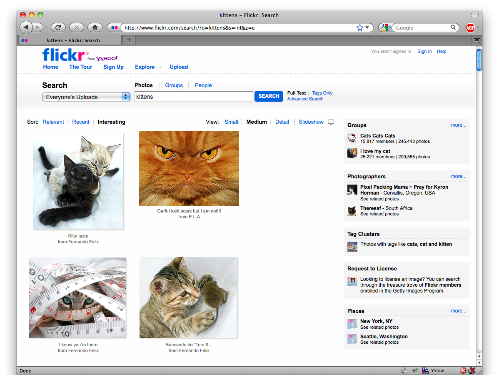Amazon
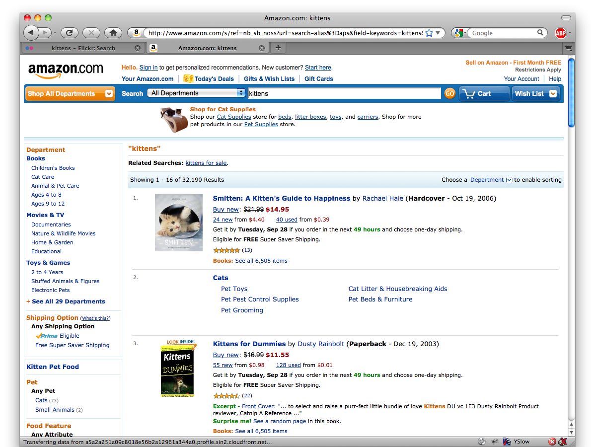deredactie.be
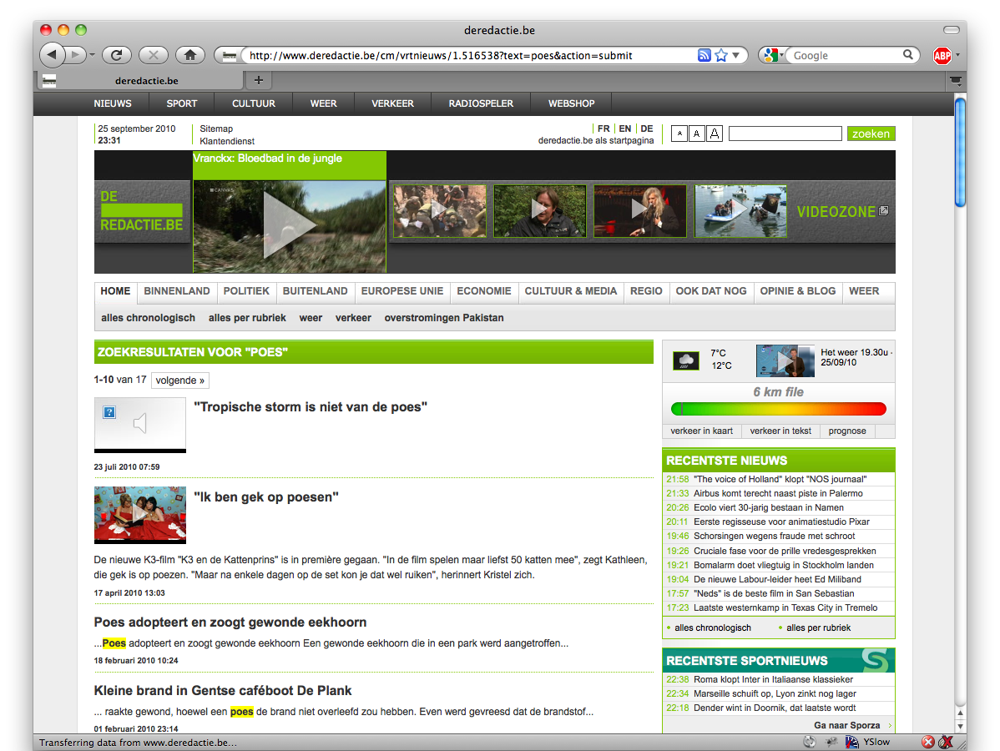I Can Has Cheezburger?
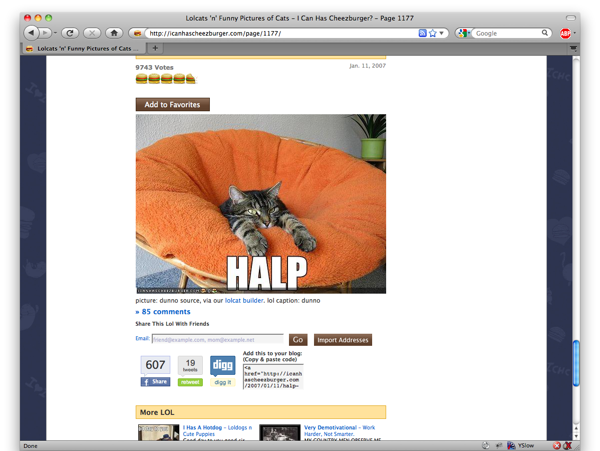HTMLWTF
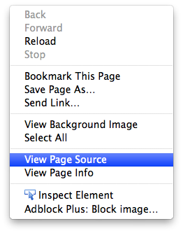Vandaag gaan we achter de schermen kijken van het web.
Elk van die pagina's is opgemaakt in HTML en vormgegeven met CSS. Het gedrag wordt bepaald door JavaScript.
Hier is de broncode van elk van die sites.
Flickr
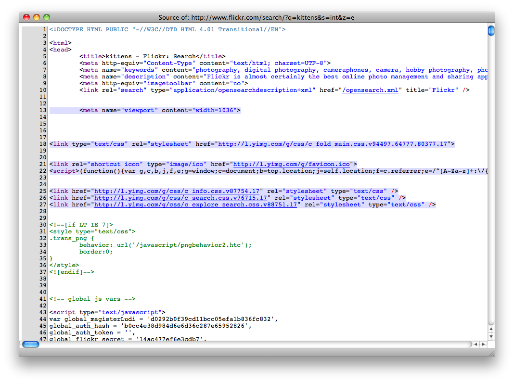Amazon
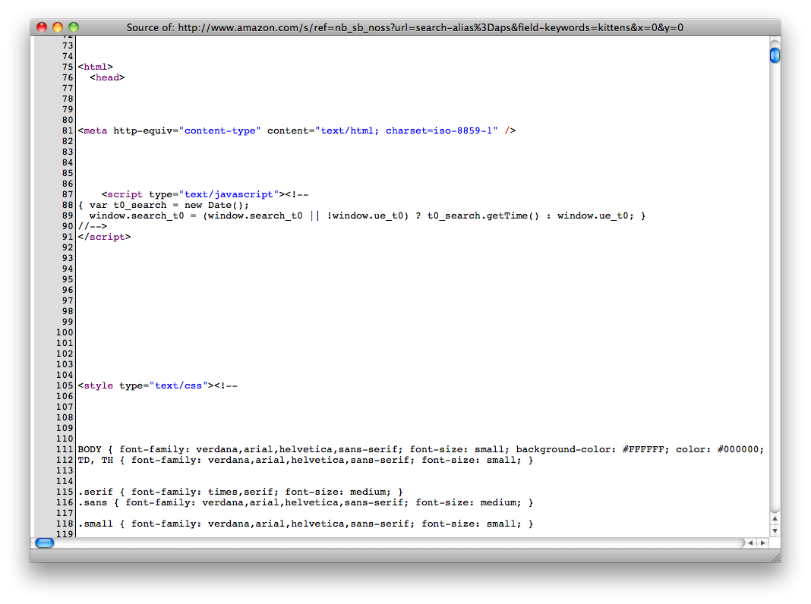deredactie.be
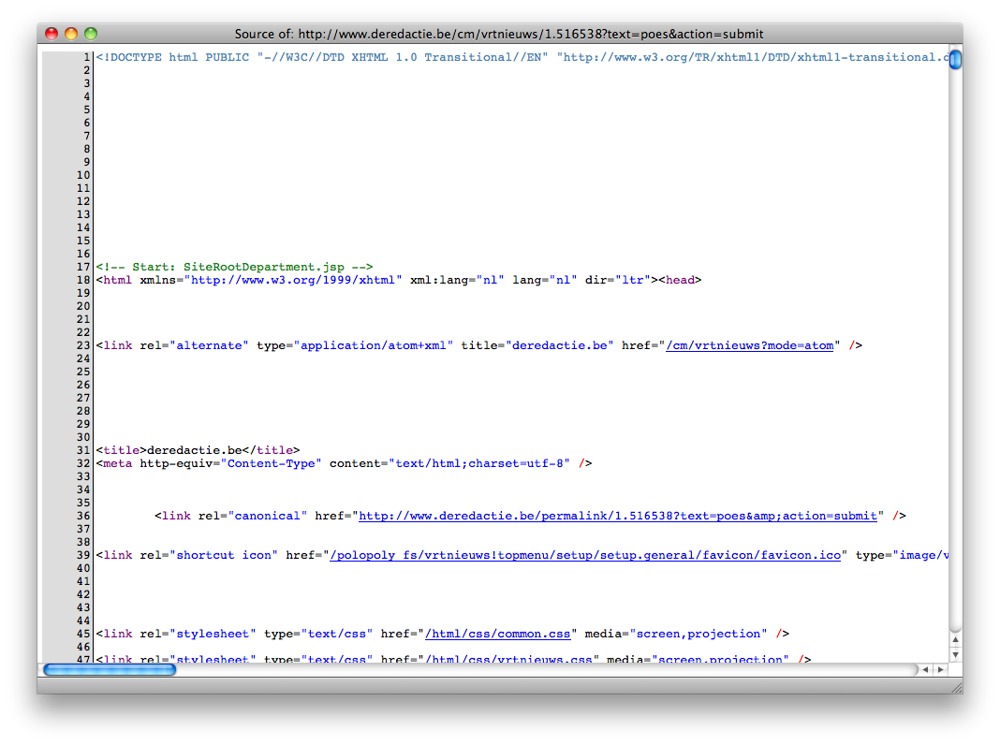I Can Has Cheezburger?
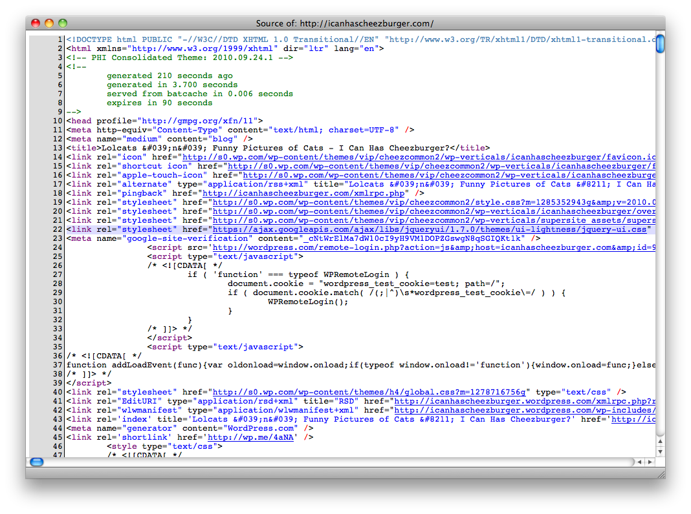HTMLWTF
<html>
Je hebt gezien dat elk van deze pagina deze tekst bevat. HTML. Dit is een tag, en in deze cursus zal je er nog heel wat zien.
Dit lijkt misschien beangstigend in het begin, maar we nemen rustig onze tijd om dit goed door te nemen.
Bottom-up aanpak
- Zelfredzaamheid
- Samenwerking
We hebben er speciaal voor gekozen om je HTML en CSS te leren zodat je echt weet hoe pagina's gemaakt worden, en wat de code erachter is. Dit is belangrijk om verschillende redenen.
Je zou, in plaats van met HTML te werken, ook met een grafische editor werken. Die schrijft dan de HTML voor jou. Fantastisch!
Tot er iets mis gaat. De editor vormt een dun laagje boven de HTML en CSS: hij abstraheert als het ware de HTML en CSS tot een grafische omgeving.
Echter, door te doen alsof HTML en CSS niet bestaan loop je tegen problemen aan die je zelf niet kan oplossen. Een element staat niet op de juiste plaats? Als je nooit de HTML en CSS ziet weet je ook niet waar je moet beginnen zoeken.
Daarom is het belangrijk om te begrijpen hoe webpagina's gemaakt worden, alvorens je visuele tools gebruikt om pagina's aan te maken.
In de "echte" wereld zal je grote websites waarschijnlijk in team maken. Als je samenwerkt met een programmeur die de HTML en CSS voor jou doet is het nog steeds belangrijk om te begrijpen wat er mogelijk is. Dit laat de conversatie tussen jou en andere teamleden vlotter verlopen.
Alternatieven
Waarom niet Flash?
- Toegankelijkheid
- Zoekmachines
Veel designer-sites zijn in Flash gemaakt. Flash is ideaal voor animatie, geluid, video, dus waarom doen we niet alles in Flash?
Er zijn een aantal redenen waarom dit geen cursus Flash is.
De hoofdreden is toegankelijkheid. Mensen die niet in staat zijn van visuele webpagina's te bekijken (zoals blinden) kunnen je flash-website niet bezoeken. Dit is misschien niet belangrijk als je een portfolio met grafisch werk maakt, maar wordt wel belangrijk als je websites ontwikkeld voor mensen die.
Daarnaast zijn er de zoekmachines. Een site in Flash bevat bijna geen zinnige informatie voor zoekrobots, waardoor je website het erg povertjes zal doen in Google.
Alternatieven
Waarom niet Flash?
Tenslotte zijn er bezoekers die met een mobiele webbrowser de pagina bekijken, zoals de iPhone of iPad.
Deze apparaten ondersteunen geen Flash, en het is duidelijk uit Apple's standpunt dat dit in hun ogen een verouderde technologie is die ze niet willen ondersteunen.
Structuur van webpagina
- Structuur
- Presentatie
- Gedrag
Structuur van webpagina
- Structuur: HTML
- Presentatie: CSS
- Gedrag: JavaScript
Spaghetticode
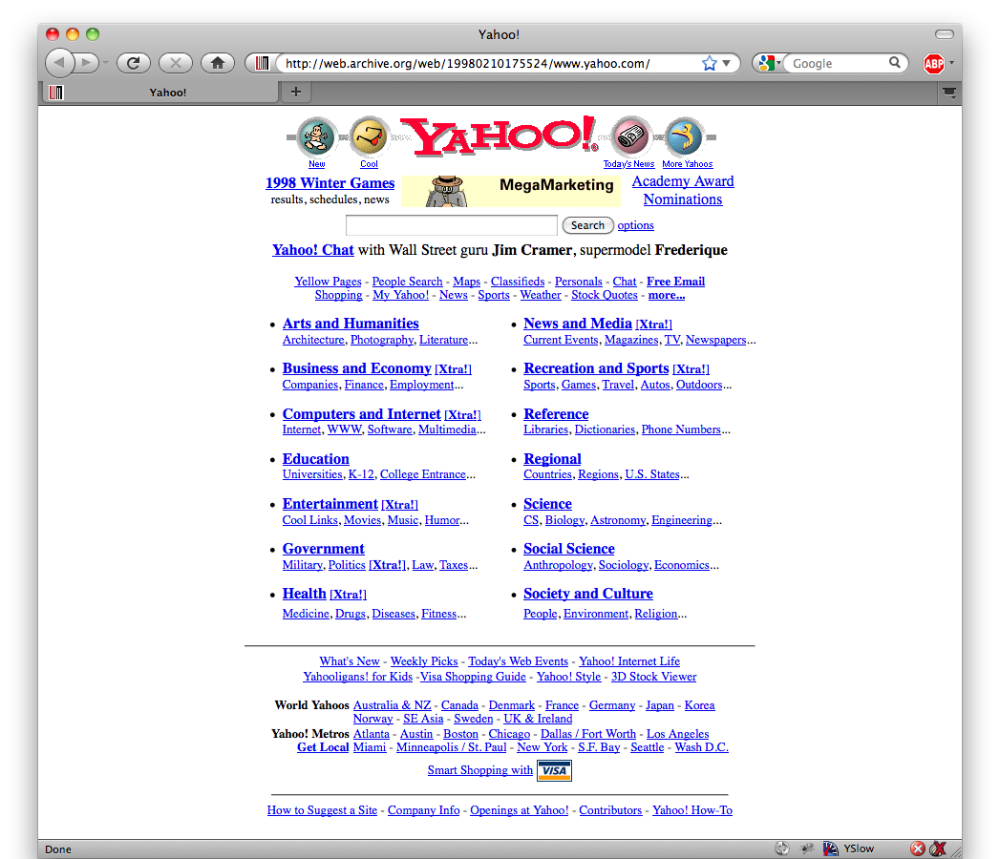CSS Zen Garden
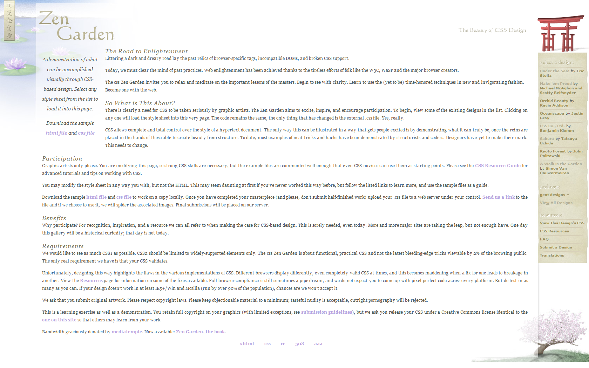CSS Zen Garden
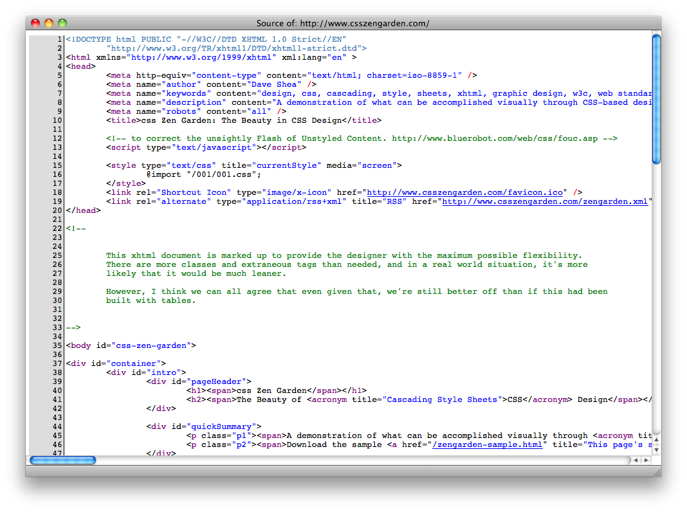Dit is de HTML broncode van CSS Zen Garden. De volgende screenshots tonen allemaal andere opmaak, maar de broncode blijft hetzelfde.
CSS Zen Garden
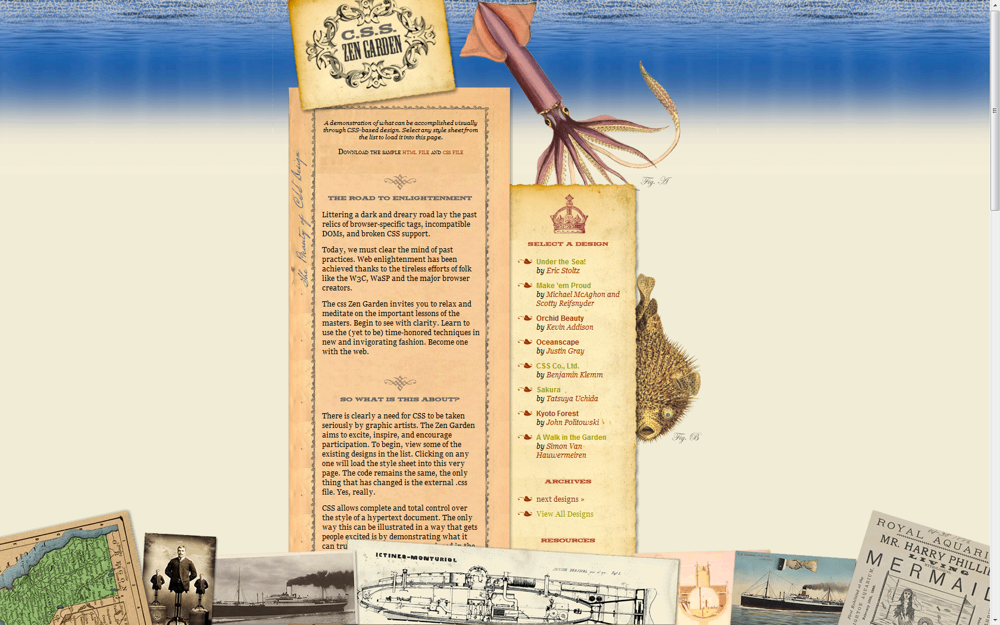CSS Zen Garden

CSS Zen Garden
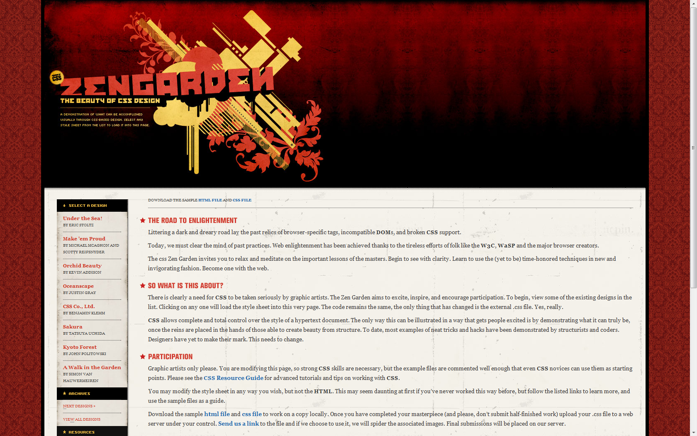Voordelen
- Toegankelijkheid
- Overdraagbaarheid
- Onderhoudbaarheid
- Snelheid
Website project
Vandaag gaan we werken aan een website voor een fictieve VZW. We beginnen vanaf een briefing waar één pagina wordt voorgesteld, werken aan de HTML, en misschien wat CSS.
Buurtfeest VZW: Briefing
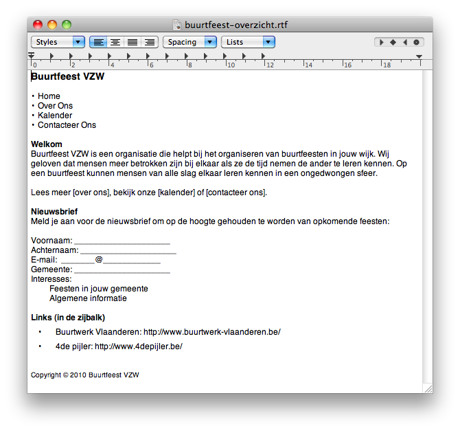Buurtfeest VZW: HTML
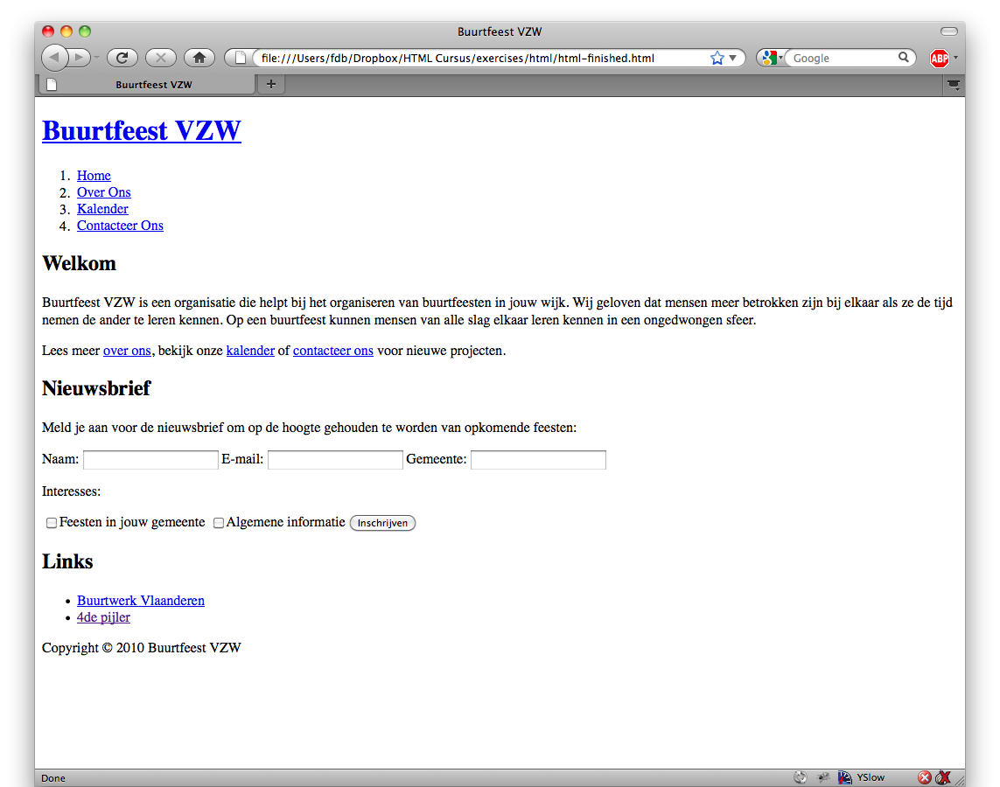Buurtfeest VZW: CSS
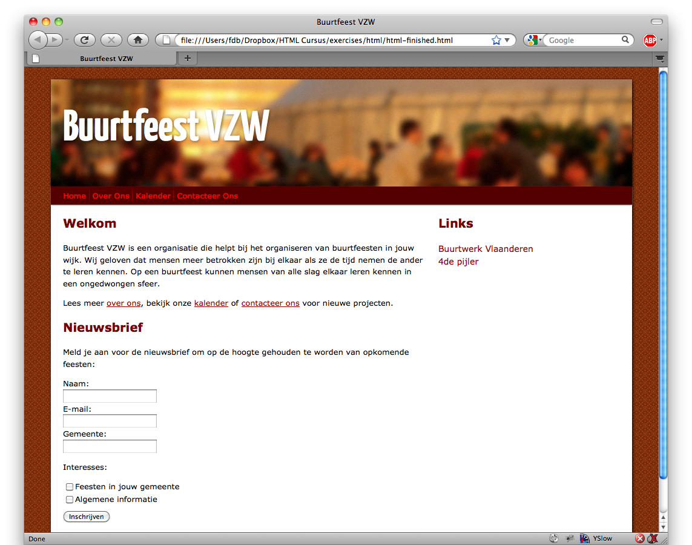Plan Cursus
- HTML overzicht
- HTML oefening
- CSS overzicht
- CSS oefening
- Project